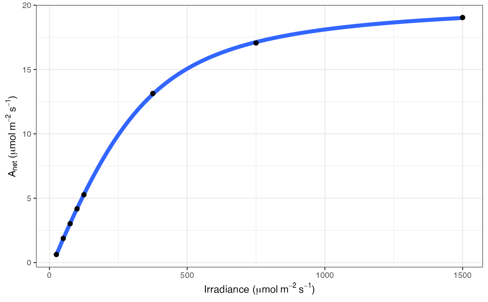

Printing graphs to system
Usage
print_graphs(
data,
path,
output_type = "jpeg",
height = 5,
width = 5,
res = 600,
units = "in",
pdf_filename,
...
)Arguments
- data
List of graphs
- path
File path for printing our graphs. Use "./" to set to current working directory
- output_type
Type of output file, jpeg or pdf
- height
Height of jpegs
- width
Width of jpegs
- res
Resolution of jpegs
- units
Units of height and width
- pdf_filename
Filename for pdf option
- ...
Further arguments for jpeg() and pdf()
Examples
# \donttest{
# Read in your data
# Note that this data is coming from data supplied by the package
# hence the complicated argument in read.csv()
# This dataset is a CO2 by light response curve for a single sunflower
data <- read.csv(system.file("extdata", "A_Ci_Q_data_1.csv",
package = "photosynthesis"
))
# Fit many AQ curves
# Set your grouping variable
# Here we are grouping by CO2_s and individual
data$C_s <- (round(data$CO2_s, digits = 0))
# For this example we need to round sequentially due to CO2_s setpoints
data$C_s <- as.factor(round(data$C_s, digits = -1))
# To fit one AQ curve
fit <- fit_aq_response(data[data$C_s == 600, ],
varnames = list(
A_net = "A",
PPFD = "Qin"
)
)
# Print model summary
summary(fit[[1]])
#>
#> Formula: A_net ~ aq_response(k_sat, phi_J, Q_abs = data$Q_abs, theta_J) -
#> Rd
#>
#> Parameters:
#> Estimate Std. Error t value Pr(>|t|)
#> k_sat 21.167200 0.158332 133.69 1.88e-08 ***
#> phi_J.Q_abs 0.051907 0.001055 49.18 1.02e-06 ***
#> theta_J 0.775484 0.014920 51.98 8.20e-07 ***
#> Rd.(Intercept) 0.668495 0.065235 10.25 0.000511 ***
#> ---
#> Signif. codes: 0 ‘***’ 0.001 ‘**’ 0.01 ‘*’ 0.05 ‘.’ 0.1 ‘ ’ 1
#>
#> Residual standard error: 0.05535 on 4 degrees of freedom
#>
#> Number of iterations to convergence: 5
#> Achieved convergence tolerance: 1.49e-08
#>
# Print fitted parameters
fit[[2]]
#> A_sat phi_J theta_J Rd LCP resid_SSs
#> k_sat 21.1672 0.05190746 0.7754836 0.6684953 12.97289 0.01225491
# Print graph
fit[[3]]

# Fit many curves
fits <- fit_many(
data = data,
varnames = list(
A_net = "A",
PPFD = "Qin",
group = "C_s"
),
funct = fit_aq_response,
group = "C_s"
)
#>
|
| | 0%
|
|======== | 11%
|
|================ | 22%
|
|======================= | 33%
|
|=============================== | 44%
|
|======================================= | 56%
|
|=============================================== | 67%
|
|====================================================== | 78%
|
|============================================================== | 89%
|
|======================================================================| 100%
# Look at model summary for a given fit
# First set of double parentheses selects an individual group value
# Second set selects an element of the sublist
summary(fits[[3]][[1]])
#>
#> Formula: A_net ~ aq_response(k_sat, phi_J, Q_abs = data$Q_abs, theta_J) -
#> Rd
#>
#> Parameters:
#> Estimate Std. Error t value Pr(>|t|)
#> k_sat 7.347423 0.141931 51.768 8.33e-07 ***
#> phi_J.Q_abs 0.027192 0.001511 17.994 5.61e-05 ***
#> theta_J 0.837778 0.030608 27.371 1.06e-05 ***
#> Rd.(Intercept) 0.615283 0.086994 7.073 0.00211 **
#> ---
#> Signif. codes: 0 ‘***’ 0.001 ‘**’ 0.01 ‘*’ 0.05 ‘.’ 0.1 ‘ ’ 1
#>
#> Residual standard error: 0.06799 on 4 degrees of freedom
#>
#> Number of iterations to convergence: 4
#> Achieved convergence tolerance: 1.49e-08
#>
# Print the parameters
fits[[3]][[2]]
#> A_sat phi_J theta_J Rd LCP resid_SSs
#> k_sat 7.347423 0.02719153 0.8377781 0.6152826 22.96322 0.01849038
# Print the graph
fits[[3]][[3]]
# Compile graphs into a list for plotting
fits_graphs <- compile_data(fits,
list_element = 3
)
# Print graphs to pdf
# Uncomment to run
# print_graphs(data = fits_graphs,
# output_type = "pdf",
# path = tempdir(),
# pdf_filename = "mygraphs.pdf")
# }